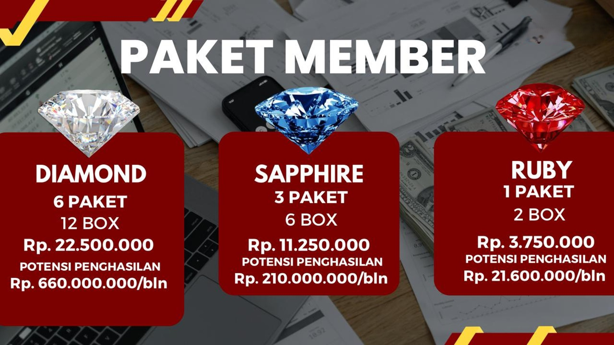

Tren saat ini yang dipicu oleh gaya hidup modern, pola makan, tingkat stres tinggi dan kurangnya aktivitas fisik menyebabkan penurunan kualitas kesehatan. Kondisi ini dialami oleh berbagai usia terutama ketika seseorang memasuki usia 40 tahun keatas, tubuh mulai melewati fase penurunan fungsi yang menjadi pintu masuk utama bagi berbagai kondisi degeneratif (penurunan fungsi sel, jaringan dan organ). pada kondisi ini, risiko terjadinya gangguan kardiovasikuler seperti hipertensi dan penyakit jantung koroner meningkat tajam akibat pengerasan pembuluh darah serta penurunan fungsi ginjal, hati dan organ lainnya. kondisi ini kerap berjalan berdampingan dengan gangguan metabolik seperti diabetes melitus tipe 2 yang dipicu oleh penurunan sensitivitas insulin serta masalah seperti osteotritis (kerusakan tulang rawan sendi) dan osteoporosis yang mulai membatasi mobilitas fisik
PRODUK AFC MERUPAKAN INOVASI MEDIS LUAR BIASA DARI JEPANG YANG MENJADI SOLUSI KESEHATAN SAAT INI
Profil Perusahaan

AFC (Asayama Family Club) adalah salah satu perusahaan farmasi tertua dan terbesar di Jepang dan merupakan perusahaan farmasi pertama yang terdaftar pada Tokyo Stock Exchange yang menghasilkan produk-produk farmasi dengan bahan alamiah tanpa bahan kimia berbahaya, produknya antara lain SOP Subarashi, Utsukushhii, and Hikari.
AFC juga merupakan pabrik farmasi pertama yang telah mendapatkan sertifikat GMP (Good Manufacturing Practice) yang mana semua proses sudah berstandar mutu tinggi dengan sistem pengawasan (Quality Control) yang sangat ketat dan menerapkan kebijakan nol kecacatan dalam produksinya (Zero Defect).
AFC terkenal karena produk-produknya terutama SOP Subarashi, Utsukushhii dan Hikari inovatif dan berbasis penelitian (by research) yang didukung dengan uji klinis dan paten manfaat. Produk ini bukanlah obat melainkan Nutrisi Kesehatan yang dapat digunakan untuk terapi pendamping dan percepatan pemulihan bagi semua jenis sakit karena akan menutrisi sel-sel aktif dalam tubuh kita untuk melakukan regenerasi dan perlindungan tubuh secara alamiah.
Produk-produk AFC sudah terdaftar dan tersertifikasi di berbagai platform standar mutu dan layak konsumsi baik Nasional maupun Internasional sehingga produk-produk AFC aman untuk dikonsumsi.
Standar Keamanan & Sertifikasi Mutu


SOP Subarashi Adalah produk Hexa Peptide (6 Peptide) yang diformulasi dengan teknologi terkini dan dilengkapi bahan-bahan eksklusif yaitu Salmon Egg Extra (Salmon Ovary Peptide + Salmon Caviar Peptide) dari ikan Oncorhynchus Keta Salmon dan juga bahan aktif lainnya dengan konsentrat peptide nano size 600 dalton.
SOP Subarashi bukan obat namun merupakan Nutrisi Kesehatan yang telah melalui proses uji klinis dan juga telah memiliki paten fungsi, ini dapat dikonsumsi bersamaan dengan obat medis (berikan jeda waktu dengan obat medis dalam mengkonsumsinya).
SOP Subarashi dipakai untuk terapi pendamping dan percepatan pemulihan (proses terapi dilakukan dengan mengkonsumsi produk selama 6 bulan tanpa putus untuk hasil yang maksimal) serta bekerja menutrisi sel induk (stem cell) dalam tubuh untuk mengaktifkan dan mempercepat proses regenerasi sel sehingga pemulihan terhadap sakit lebih cepat terjadi.
SOP Subarashi telah terdaftar di MIMS (Monthly Index Of Medical Specialities) yang merupakan referensi medis dalam meresepkan obat. dengan kata lain SOP subarashi dapat diresepkan oleh dokter.
8 Paten Fungsi yang Dimiliki:
- Efek regenerasi sel.
- Memperbaiki sirkulasi pembuluh darah.
- Mencegah penggumpalan darah.
- Anti hipertensi.
- Peremajaan sel.
- Efek anti penuaan.
- Menjaga Kesehatan hati.
- Mengurangi asam urat.
Membantu Pemulihan & Gangguan Tubuh Antara Lain:

Utsukushhii memiliki bahan aktif utama yaitu Salmon DNA dari ikan Oncorhynchus Keta Salmon, Takara Combu Fucoidan dan tiga probiotik terkuat dan juga beberapa bahan aktif lain.
Utsukushhii menghasilkan peptide nano size 800 dalton and memiliki fungsi dalam menstimulasi NK-Cell dalam tubuh untuk melaksanakan fungsinya yaitu melindungi tubuh dari bakteri dan virus serta menghancurkan sel abnormal penyebab kanker dan tumor.
Utsukushhii bukan obat namun merupakan Nutrisi Kesehatan yang telah melalui proses uji klinis dan juga telah memiliki paten fungsi, dan ini juga dapat dikonsumsi bersamaan dengan obat medis (berikan jeda waktu dengan obat medis dalam mengkonsumsinya).
Utsukushhii dipakai untuk terapi pendamping dan percepatan pemulihan (proses terapi dilakukan dengan mengkonsumsi produk selama 6 bulan tanpa putus untuk hasil yang maksimal) dan telah terdaftar di MIMS (Monthly Index Of Medical Specialities) yang merupakan referensi medis dalam meresepkan obat. dengan kata lain Utsukushhi juga dapat diresepkan oleh dokter.
8 Paten Fungsi yang Dimiliki:
- Anti tumor agent.
- Efek mengaktifkan kekebalan tubuh.
- Zat terapi hepatitis C.
- Perlindungan terhadap infeksi.
- Mengurangi kadar racun dalam darah.
- Mencegah dan mengobati infeksi virus SARS.
- Perlindungan dari racun oksidatif.
- Menekan pertumbuhan tumor dan mengurangi efek obat anti kanker.
Membantu Pemulihan & Gangguan Tubuh Antara Lain:

Hikari Adalah Superfood untuk mata dan Otak dengan kandungan 100% VEGAN PEPTIDE, memiliki fungsi untuk perbaikan otak dan mata.
Hikari akan menstimulasi otak untuk melakukan dan mempercepat proses Neurogenesis.
Hikari bukan obat namun merupakan Nutrisi Kesehatan yang telah melalui proses uji klinis dan juga telah memiliki paten fungsi, dan ini juga dapat dikonsumsi bersamaan dengan obat medis (berikan jeda waktu dengan obat medis dalam mengkonsumsinya).
Hikari dipakai untuk terapi pendamping dan percepatan pemulihan (proses terapi dilakukan dengan mengkonsumsi produk selama 6 bulan tanpa putus untuk hasil yang maksimal) dan telah terdaftar di MIMS (Monthly Index Of Medical Specialities) yang merupakan referensi medis dalam meresepkan obat. dengan kata lain Utsukushhi juga dapat diresepkan oleh dokter.
5 Paten Fungsi yang Dimiliki:
- Memperbaiki memori otak.
- Meningkatkan fungsi dan aktivitas otak.
- Meningkatkan performa visual dan Kesehatan mata.
- Melindungi mata dari sinar blue light.
- Meningkatkan Tingkat Neurogenesis.
Membantu Pemulihan Gangguan Saraf, Otak & Mata Antara Lain:
Cara Konsumsi Produk
Produk AFC berupa bubuk, baik itu SOP Subarashi, Utsukushhii maupun Hikari. Cara mengkonsumsinya seperti penjelasan pada gambar dibawah ini (untuk Hikari metode konsumsinya sama).
Pendapat Dokter dan Keberhasilan Pemulihan


Gabung Bersama AFC Membership
Menjadi bagian dari Official Member AFC Jepang memberikan Anda jaminan keaslian produk serta berbagai keuntungan eksklusif untuk kesehatan fisik dan finansial.

Cara Menjadi Member
Cukup dengan melakukan pembelian paket produk resmi AFC (SOP Subarashi / Utsukushhii / Hikari) melalui kami, Anda akan langsung didaftarkan ke sistem pusat AFC Indonesia secara gratis untuk menjadi member AFC. Terdapat tiga paket member yang dapat dipilih yaitu Ruby atau satu paket terdiri dari 2 box produk dengan nilai Rp.3.750.000,-, Paket Saphire atau tiga paket terdiri dari 6 box produk dengan Nilai Rp.11.250.000,- dan paket Diamond atau enam paket terdiri dari 12 box produk dengan Nilai Rp.22.500.000,-.
Keuntungan Eksklusif Member:
- Mendapatkan harga resmi paket terbaik dan promo berkala.
- Jaminan keaslian produk 100% langsung dari pabrik AFC di Jepang.
- Mendapatkan hak Bisnis AFC dan bonus harian, bulanan dan tahunan.
- Berkesempatan mendapatkan jalan-jalan gratis ke luar negeri setiap tahunnya.
- Berkesempatan mendapatkan produk gratis.
- Keanggotaan resmi yang berlaku selamanya dan bisa diwariskan.
Bisnis AFC
Bisnis AFC adalah bisnis penjualan produk secara langsung kepada costumer tanpa melalui retail sehingga setiap orang memiliki peluang untuk menjalankan bisnisnya. Setiap orang yang telah melakukan pembelian produk AFC minimal dua box produk (satu paket) berhak langsung menjadi member dan memiliki hak untuk menjalankan bisnis AFC.
Secara prinsip bisnis AFC adalah bisnis penjualan produk (reseller) yang didesain dengan sistem agar setiap penjualan yang dilakukan akan mendapatkan income dalam bentuk bonus penjualan kepada pelaku bisnis dan bonus tersebut dapat berupa bonus harian, bonus bulanan dan bonus tahunan serta bonus Trip, jalan-jalan keluar negeri.
Bonus Harian
Pertama: Bonus Sponsor
Bonus Sponsor diperoleh ketikan kita dapat menjual produk ke costumer dan costumer tersebut masuk menjadi member. Perhitungan bonus yang diperoleh seperti terlihat pada gambar:
• Apabila kita member Ruby: Dan ada yang membeli produk dengan paket Ruby juga maka kita akan mendapatkan bonus sponsor sebesar Rp.300.000,-, namun ketika customer membeli produk dengan Saphire maka kita akan mendapatkan bonus sponsor sebesar Rp.900.000,- dan Ketika customer membeli produk paket Diamond kita akan mendapatkan bonus sponsor sebesar Rp.1.800.000,-.
• Apabila kita member Saphire: Dan ada yang membeli produk dengan paket Ruby maka kita akan mendapatkan bonus sponsor sebesar Rp.450.000,-, namun ketika customer membeli produk dengan Saphire juga maka kita akan mendapatkan bonus sponsor sebesar Rp.1.350.000,- dan Ketika customer membeli produk paket Diamond kita akan mendapatkan bonus sponsor sebesar Rp.2.700.000,-.
• Apabila kita member Diamond: Dan ada yang membeli produk dengan paket Ruby maka kita akan mendapatkan bonus sponsor sebesar Rp.550.000,-, namun ketika customer membeli produk dengan Saphire maka kita akan mendapatkan bonus sponsor sebesar Rp.1.650.000,- dan Ketika customer membeli produk paket Diamond kita akan mendapatkan bonus sponsor sebesar Rp.3.300.000,-.
Kedua: Bonus Pass Up
Bonus Pass Up adalah bonus yang sifatnya khusus hanya untuk member Diamond saja. Bonus Pass Up atau bonus lompatan ini didapatkan ketika tim kita yang merupakan line sponsor langsung dan belum berstatus Diamond menjual produk kepada costumer, kita akan mendapatkan bonus Pass Up nya yang besarnya merupakan selisih dari bonus sponsor diamond dan bonus sponsor dari tim kita yang menjual produk ke custumer tanpa mengurangi bonus dari tim kita yang melakukan penjualan (seperti terlihat pada gambar).
Ketiga: Bonus Pairing
Dalam menjalankan bisnis AFC kita bekerja Bersama tim dan tim kita dibentuk pada dua sisi yaitu tim kiri dan tim kanan. Bonus Pairing ini didapat ketika terjadi penjaulan di tim kiri dan tim kanan dengan besaran yang sama atau dengan kata lain terjadi penjualan yang sama antara tim kiri dan tim kanan. Besaran dari bonus pairing ini seperti terlihat pada gambar yaitu untuk member Ruby ketika tim kiri dan tim kanannya melakukan penjualan maka akan memperoleh bonus sebesar Rp.150.000,- setiap paketnya. Untuk member Saphire ketika tim kiri dan tim kanannya melakukan penjualan maka akan memperoleh bonus sebesar Rp.200.000,- setiap paketnya sedangkan untuk member Diamond ketika tim kiri dan tim kanannya melakukan penjualan maka akan memperoleh bonus sebesar Rp.300.000,- setiap paketnya.
Bonus Bulanan
Bonus bulanan atau Bonus Unilevel adalah bonus yang diperoleh setiap bulannya berdasarkan perkembangan tim dan besaran income dari setiap member dalam tim dan disesuaikan dengan level dari setiap tim kita.
Bonus Tahunan
Bonus tahunan atau Bonus Rank adalah bonus yang diperoleh setiap tahunnya dengan menggelar akumulasi jumlah pasangan paket atau pairing yang terjadi Selama satu periode rank (periode rank dimulai dari 16 November tahun sebelum sampai dengan 15 November tahun bersangkutan).
• Jika akumulasi Pairing selama satu periode rank mencapai 100 pair (disebut Toreda) maka akan mendapatkan bonus tahunan sebesar Rp.5.000.000,-.
• Jika akumulasi Pairing selama satu periode rank mencapai 500 pair (disebut Ronin) maka akan mendapatkan bonus tahunan sebesar Rp.25.000.000,-.
• Jika akumulasi Pairing selama satu periode rank mencapai 1.000 pair (disebut Samurai) maka akan mendapatkan bonus tahunan sebesar Rp.75.000.000,-.
• Jika akumulasi Pairing selama satu periode rank mencapai 5.000 pair (disebut Shogun) maka akan mendapatkan bonus tahunan sebesar Rp.575.000.000,-.
• Jika akumulasi Pairing selama satu periode rank mencapai 10.000 pair (disebut Daimyo) maka akan mendapatkan bonus tahunan sebesar Rp.1.575.000.000,-.
• Jika akumulasi Pairing selama satu periode rank mencapai 20.000 pair (disebut Bushido) maka akan mendapatkan bonus tahunan sebesar Rp.3.075.000.000,-.
Bonus Trip
Bonus Trip akan didapatkan ketika penjualan pribadi bisa mencapai jumlah prasyarat yang ditentukan (prasyarat akan berbeda setiap promo trip). Bonus trip AFC akan diberikan dua kali dalam setahun berupa perjalanan keluar negeri atau berlayar dengan kapal pesiar.
Pesan Produk Asli Anda Sekarang
Dapatkan produk original AFC Jepang langsung dari agen resmi terpercaya. Klik tombol di bawah ini untuk terhubung langsung dengan WhatsApp kami guna konsultasi gratis dan pemesanan cepat.

Langkah Mudah Pemesanan:
- Klik tombol "Order Lewat WhatsApp" di bawah.
- Sebutkan nama dan produk yang ingin Anda pesan serta jumlahnya.
- Kami akan mengonfirmasi total biaya sesuai harga resmi.
- Produk dikirim langsung dengan pengemasan aman atau dapat mengambil langsung di stockist terdekat.
Order Lewat WhatsApp